기여: 클릭 후 7일, 조회 후 1일 또는 참여 후 1일. 전환값은 화면값(구매 전환값 열). 10/13 당일분 미반영(Meta는 10/12까지 표시). hook_rate/hold_rate는 인사이트 패널 값(정수 반올림 포함).
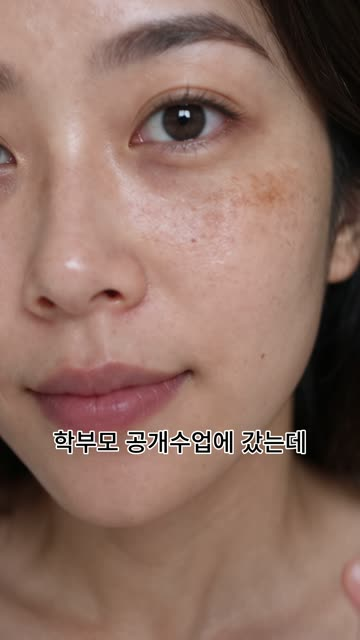
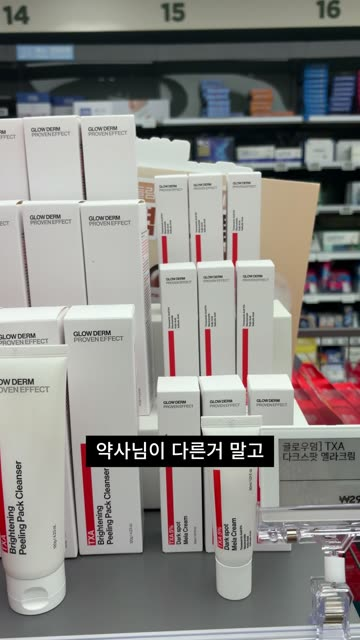
| 광고 | 게재 | 지출 | 구매 | 매출 | ROAS | 후크 비율 | 지속 비율 |
|---|---|---|---|---|---|---|---|
| 01 웹디_학부모영상_SunHi_vim_fb_261006_01 | 꺼짐 | ₩36,744 | 0 | ₩0 | — | 33% | 4.08% |
| 02 웹디_시나리오2_39초_vim_fb_261006_02 | 켜짐 | ₩8,343 | 0 | ₩0 | — | 25% | 12% |
| 03 BX_시나리오1_글로우덤Ai영_vim_fb_261006_03 | 켜짐 | ₩29,267 | 1 | ₩44,900 | 1.53 | 29% | 4.2% |
| 04 BX_0929_BA편집_최종_vim_fb_261006_04 | 켜짐 | ₩8,455 | 0 | ₩0 | — | 31% | 20% |
| 05 콘텐츠기획_피캄연습5_v8_vim_fb_261006_05 | 켜짐 | ₩192,388 | 4 | ₩170,600 | 0.89 | 20% | 4.26% |
| A 콘텐츠기획_피캄연습5_v8_vim_fb_261012_05 | 캠페인 중단됨 | ₩0 | 0 | ₩0 | — | — | — |
| B 웹디_시나리오3_수정본_vim_fb_261012_06 | 캠페인 중단됨 | ₩0 | 0 | ₩0 | — | — | — |
| 캠페인 합계 (계산) 콘텐츠기획_기미크림_CBO_261006_소재테스트 (광고세트 1006_CBO_여성3559_크림) | ₩275,197 | 5 | ₩215,500 | 0.78 | — | — | |
| 캠페인 합계 (계산) 10/12 신규 테스트 캠페인 | ₩0 | 0 | ₩0 | — | — | — |
매출 = 메타 구매 전환값 열(화면값). 후크 비율 = 3초 생존율, 지속 비율 = 메타 패널 값.
| 광고 | 노출 | 링크클릭 | 랜딩조회 | 구매 | CTR | CPC | CPM |
|---|---|---|---|---|---|---|---|
| 01 웹디_학부모영상_SunHi_vim_fb_261006_01 | 463 | 10 | 9 | 0 | 2.16% | ₩3,674 | ₩79,361 |
| 02 웹디_시나리오2_39초_vim_fb_261006_02 | 109 | 2 | 2 | 0 | 1.83% | ₩4,154 | ₩76,541 |
| 03 BX_시나리오1_글로우덤Ai영_vim_fb_261006_03 | 440 | 18 | 15 | 1 | 4.09% | ₩1,625 | ₩66,516 |
| 04 BX_0929_BA편집_최종_vim_fb_261006_04 | 83 | — | — | 0 | — | — | ₩101,867 |
| 05 콘텐츠기획_피캄연습5_v8_vim_fb_261006_05 | 2,972 | 59 | 48 | 4 | 1.99% | ₩3,241 | ₩64,734 |
| A 콘텐츠기획_피캄연습5_v8_vim_fb_261012_05 | — | — | — | 0 | — | — | — |
| B 웹디_시나리오3_수정본_vim_fb_261012_06 | — | — | — | 0 | — | — | — |
| 합계 (계산) | 4,067 | 89 | 74 | 5 | 2.19% | ₩3,092 | ₩67,666 |
기준선 (ABO 성과 (젊은 남성 초두), 외국인 극찬, 어머님, 판매종료 (전문가후킹) 단순 평균, 계산): 1초 85.5% · 2초 62.0% · 3초 54.5% · 5초 45.5% · 10초 27.2%. 우리 3초 vs 기준선: 01 33% (-22%p) · 02 25% (-30%p) · 03 29% (-26%p) · 04 31% (-24%p) · 05 20% (-34%p)
색상 실선 = 우리 광고 · 점 = 3초 생존율 · 초록 점선 = CCFM 위닝 · 회색 실선 + × = CCFM 실패. 재생 100 미만 표본은 곡선 모양만 참고.
| 구분 | 소재 · 클릭하여 영상 보기 | 초두 후킹률 | 영상 유지율 | ROAS |
|---|---|---|---|---|
| CCFM 위닝 | ABO 성과 (젊은 남성 초두) ▶ CCFM_정은_글로우덤2 · 2026-06-01~2026-10-11 (누적) | 54% | 4.95% | 141% (계산) |
| CCFM 위닝 | 외국인 극찬 ▶ CCFM_정은_글로우덤2 · 2026-06-01~2026-10-11 (누적) | 60% | 2.51% | 140% (계산) |
| CCFM 위닝 | 어머님 ▶ CCFM_정은_글로우덤2 · 2026-06-01~2026-10-11 (누적) | 44% | 12.47% | 156% (계산) |
| CCFM 위닝 | 판매종료 (전문가후킹) ▶ CCFM_정은_글로우덤2 · 2026-06-01~2026-10-11 (누적) | 60% | 8.05% | 153% (계산) |
| CCFM 실패 | 경고 초두변경 (OFF) ▶ CCFM_정은_글로우덤2 · 2026-06-01~2026-10-11 (누적) | 39% | 4.96% | 119% (계산) |
| CCFM 실패 | 어머님 9/5 재세팅 ▶ CCFM_정은_글로우덤2 · 2026-06-01~2026-10-11 (최대) | 34% | 10.98% | 98% (계산) |
| CCFM 실패 | 관리받는구도 8/25 ▶ CCFM_정은_글로우덤2 · 2026-06-01~2026-10-11 (최대) | 55% | 7.77% | 127% (계산) |
| CCFM 실패 | 종이 9/4 ▶ CCFM_정은_글로우덤2 · 2026-06-01~2026-10-11 (최대) | 40% | 7.47% | 96% (계산) |
| CCFM 실패 | 커뮤니티 8/12 ▶ CCFM_정은_글로우덤2 · 2026-06-01~2026-10-11 (최대) | 74% | 56.5% | 145% (계산) |
| CCFM 실패 | 카피배리(화장) 8/27 ▶ CCFM_정은_글로우덤2 · 2026-06-01~2026-10-11 (최대) | 32% | 11.41% | 87% (계산) |
| CCFM 실패 | 어머님베리(언니) 9/11 ▶ CCFM_정은_글로우덤2 · 2026-06-01~2026-10-11 (최대) | 28% | 15.34% | 88% (계산) |
| CCFM 실패 | 콜라쥬영상화(2) 9/10 ▶ CCFM_정은_글로우덤2 · 2026-06-01~2026-10-11 (최대) | 53% | 34.17% | 48% (계산) |
| CCFM 참고 | ABO 파란인물 ▶ CCFM_정은_글로우덤2 · 2026-06-01~2026-10-11 (누적) | 45% | 7.53% | 84% (계산) |
| CCFM 참고 | 3D 피부단면 ▶ CCFM_정은_글로우덤 (1계정) · 2026-06-01~2026-10-11 (누적) | 18.2% | 37.6% | 89% (계산) |
| CCFM 참고 | 판매종료 (전문가후킹, 9/4) ▶ CCFM 글로우덤2(광고명 _fb_) · 2026-06-01~2026-10-11 (누적) | 49% | 5.76% | 150% (계산) |
| 우리 광고 | 우리 01 웹디_학부모영상_SunHi_vim_fb_261006_01 ▶ | 33% | 4.08% | — |
| 우리 광고 | 우리 02 웹디_시나리오2_39초_vim_fb_261006_02 ▶ | 25% | 12% | — |
| 우리 광고 | 우리 03 BX_시나리오1_글로우덤Ai영_vim_fb_261006_03 ▶ | 29% | 4.2% | 153% (계산) |
| 우리 광고 | 우리 04 BX_0929_BA편집_최종_vim_fb_261006_04 ▶ | 31% | 20% | — |
| 우리 광고 | 우리 05 콘텐츠기획_피캄연습5_v8_vim_fb_261006_05 ▶ | 20% | 4.26% | 89% (계산) |
| 우리 광고 | 우리 A 콘텐츠기획_피캄연습5_v8_vim_fb_261012_05 ▶ | — | — | — |
| 우리 광고 | 우리 B 웹디_시나리오3_수정본_vim_fb_261012_06 ▶ | — | — | — |
후킹률·유지율 = 메타 인사이트 패널 후크/지속 비율(우리와 같은 정의). CCFM ROAS는 광고관리자 누적(정점 구간 아님). 우리 ROAS = 구매 ROAS x 100.
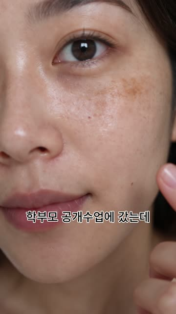
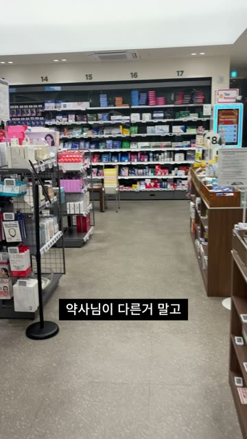
장면은 영상 1초 간격 프레임 기준, ±1초.
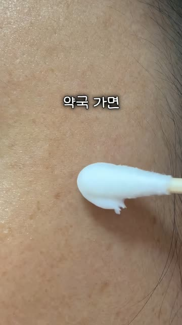
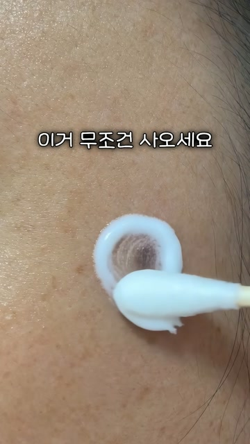
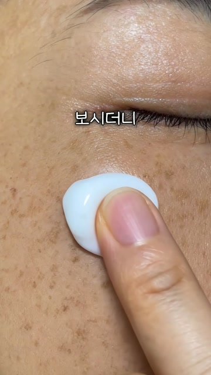
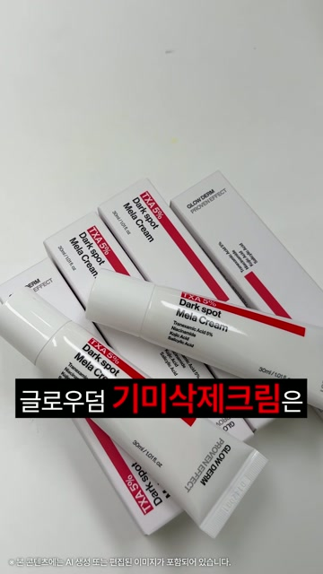
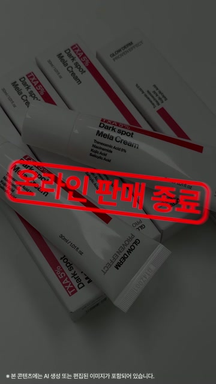
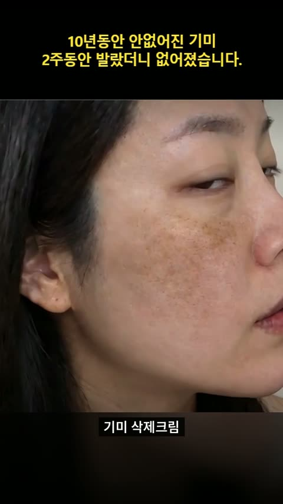
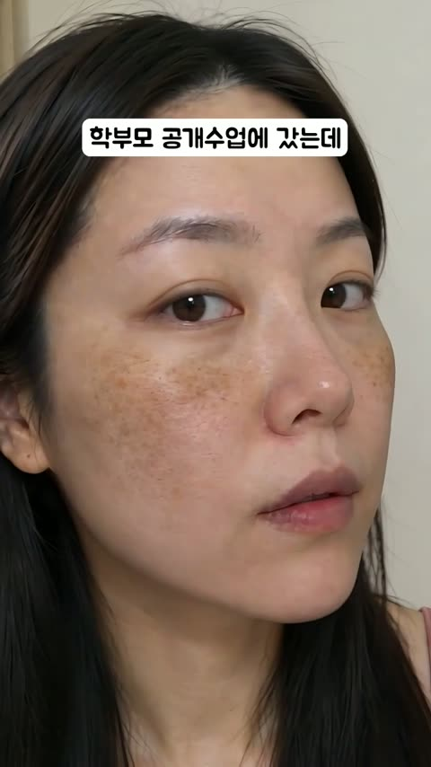
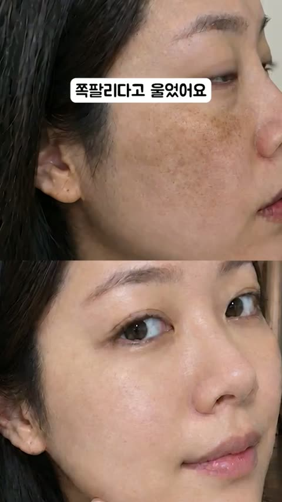
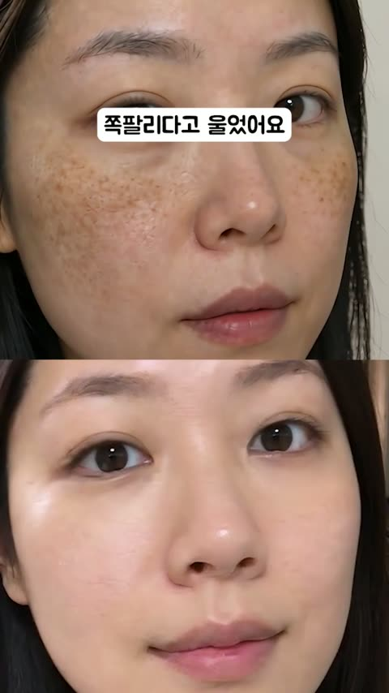
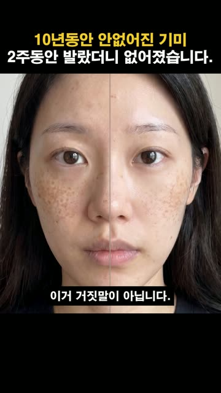
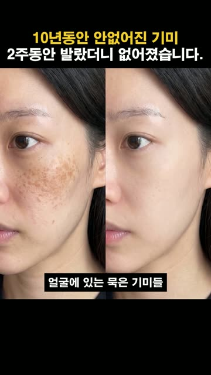
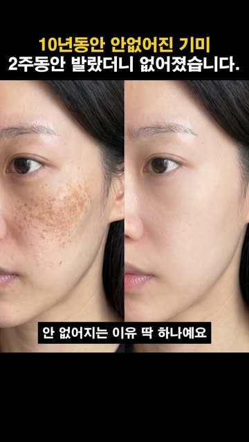
| CCFM 위닝 | 우리 05 | 우리 01 | |
|---|---|---|---|
| 0초 화면 | 문제 피부 + 바르는 행위, 또는 화자 1명 | 제품 튜브 | 매초 바뀌는 얼굴 |
| 0~5초 인물 | 1명 고정 | 4~5명 교체 | 4~5명 교체 |
| 상단 고정 문구 | 없음 | 있음 | 없음 (3~4초 B&A 분할) |
| 3초 후킹률 | 40~50%+ | 21% | 33% |
CCFM 위닝은 0초에 문제 피부 + 바르는 행위 또는 화자 1명. 우리는 후킹률이 CCFM OFF 소재(40%)보다 낮다.
10/9엔 05 상단 고정 문구를 빼라고 했지만, 구매 4건이 전부 05에서 나와 철회. 고정 문구 효과는 10/12 신규 테스트(05 vs 시나리오-3, 같은 문구·0초 얼굴 시작)로 확인 예정.
CCFM 지표는 슬랙 원문 수치, 메타 패널 '후크/지속 비율'과 같은 정의인지 미확인(추측·확신도 중). CCFM 위닝 초별 그래프는 미수집.
| 구분 | 표본 | 애프터 첫 등장 (중앙값) | 3초 안 B&A | 명확도 상/중/하 |
|---|---|---|---|---|
| CCFM 효율 1~7위 | 13편 (B&A 12) | 5.5초 (4~9초) | 0/12 | 5 / 7 / 0 |
| CCFM 효율 8~11위 | 14편 (B&A 6) | 8.5초 | 2/6 | 1 / 4 / 1 |
| CCFM 순위 밖 B&A 영상 | 42편 (B&A 40) | 2.0초 | 30/40 | 18 / 21 / 1 |
| ACIS 화장품 (피부 개선형) | 17편 (B&A 15) | 27초 (11~39초) | 0/17 | 6 / 3 / 6 |
CCFM 위닝 B&A는 대부분 같은 부위 도포→닦아냄 연속 컷(어머님 5초, 할인종료 4초, 판매종료 6초). 좌우·상하 분할은 관리받는구도·종이 2건뿐. 0~3초 분할 정지사진형은 순위 밖에 몰려 있다.
ACIS도 15편이 5초 안에 피부 고민 클로즈업으로 시작하고, before/after 비교는 11~39초에 나온다.
우리 적용: 0초 기미 접사 → 1~4초 도포·닦기 → 4~6초 같은 부위·같은 구도 애프터.
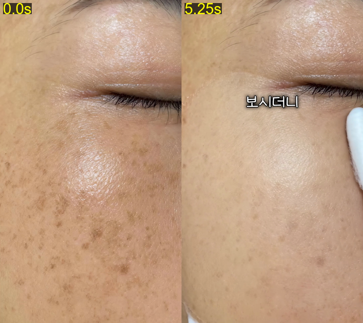
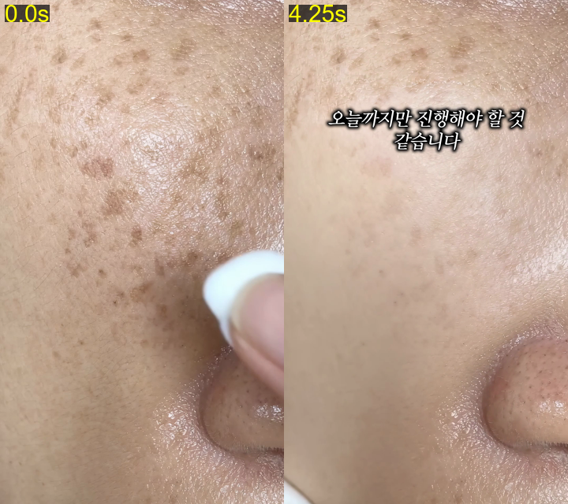
한계: CCFM 1~7위 13편은 실질 소스 6개의 변형. 순위 밖은 B&A 코드가 붙은 영상만 골라 편향이 있어 인과 판단 불가. ACIS 풀 상위 60편 중 59편은 영상 링크 만료(404)로 보관본 17편만 봤고(집행 최대 47일), 40초 이후는 미판독. 순위·ROAS 근거는 ccfm_efficiency.md. 원자료: research/비포애프터_타이밍_20261012/.
| 구분 | 이름 | ID |
|---|---|---|
| 캠페인 | 콘텐츠기획_기미크림_CBO_261012_시나리오3테스트 | 120253118515260127 |
| 광고세트 | 1012_CBO_여성3559_크림_S3테스트 | 120253118515290127 |
| 광고 A | 콘텐츠기획_피캄연습5_v8_vim_fb_261012_05 영상: 피캄연습5 피드 안 잘리는 버전 43.95초 · utm_content=vim_fb_261012_05 | 120253118515240127 |
| 광고 B | 웹디_시나리오3_수정본_vim_fb_261012_06 영상: 웹디 시나리오3(유라) 피드 안 잘리는 버전 39.36초 · utm_content=vim_fb_261012_06 | 120253118625590127 |
| 원본과 다른 점 | 이름, 영상(피드 4:5에서 상단 문구 안 잘리게 수정), utm_content, 시작일 |
|---|---|
| 원본과 같음 (전수 점검) | 목표, 입찰, 픽셀·구매 이벤트, 기여(클릭 7일·조회 1일·참여 1일), 타기팅(KR 여성 35~59 한국어), 노출위치, 브랜드 안전 "확장", 아이덴티티 뷰티개꿀팁, 문구·CTA |
| 꺼둔 것 | 제품 둘러보기·슬라이드쇼 (복제 시 메타가 자동으로 켜서 끔) |
| 업로드 화질 | 10MB 업로드 한도 때문에 2패스 재인코딩. 원본 대비 SSIM 05 = 0.9949, 시나리오3 = 0.9954 (체감 차이 없음) |
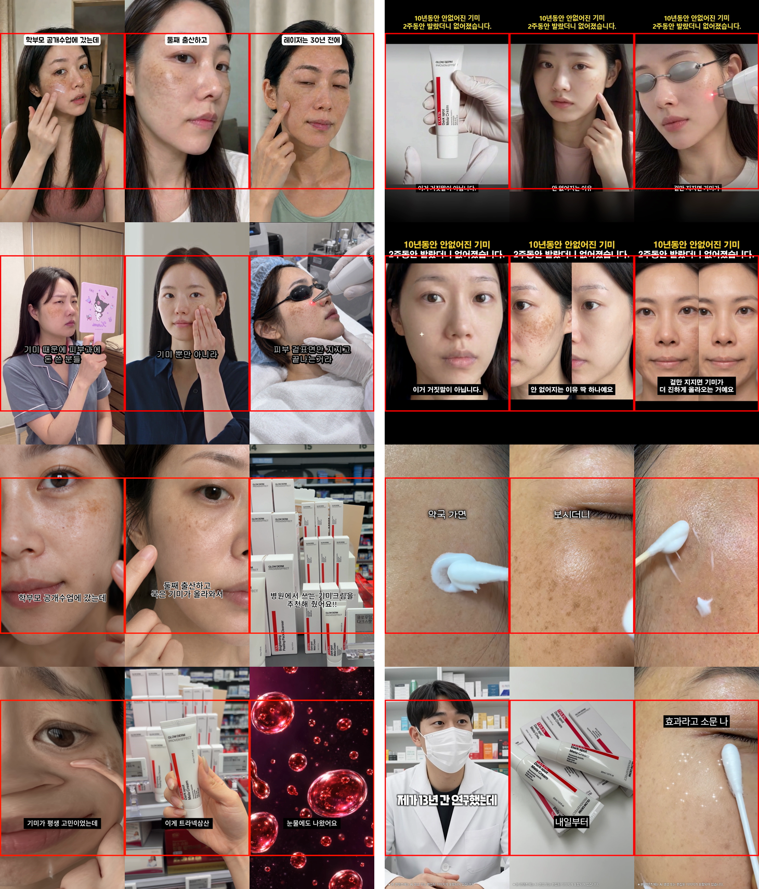
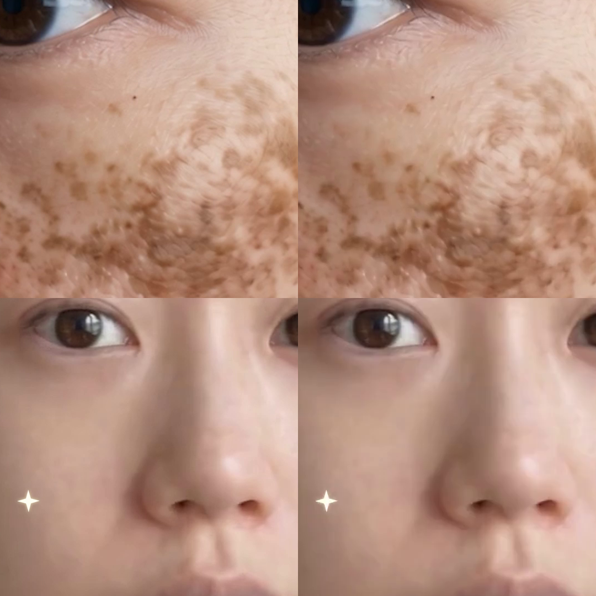